Услуги
Реставрация сумок
Реставрация обуви
Наши работы
Цены
О нас
Блог
Доставка
Контакты
+7 (499) 777-45-19
Оставить заявку
Блог Bruno Master
11.10.2021
Чистка и отбеливание лоферов Loro Piana
Компания Loro Piana была основана в 1924 году Пьетро Лоро Пиана в Тривенто, Италия. Специализируется на производстве одежды, трикотажа и предметов интерьера из тонкой пряжи...
13.09.2021
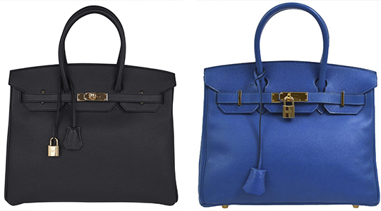
Ремонт сумок Hermes в Киеве
Hermès считается одним из самых желанных люксовых брендов. Но иногда случаются ситуации, когда в процессе использования сумка может утратить презентабельный вид и необходимо найти действительно высококлассного специалиста...
16.06.2021
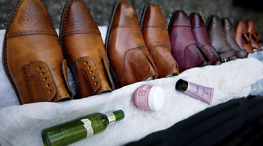
Тонирование обуви и сумок
Углы любимой сумки изрядно износились? Или носочная часть сапога потерпела неудачу? Это не страшно! В этом случае Вам поможет одна из наших наиболее популярных услуг – тонирование.
25.05.2021
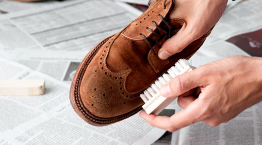
В чём разница между замшей и нубуком?
Нубук и замша – это разновидности кожи. Разница между ними состоит в обработке...
03.05.2021
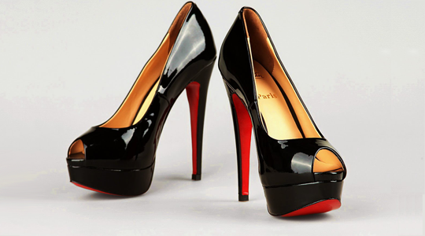
Как ухаживать за лакированной обувью?
Уход за кожаной обувью с лакированной поверхностью - задача не из легких. Чтобы продлить срок службы таким изделиям, мы рекомендуем:
24.04.2021
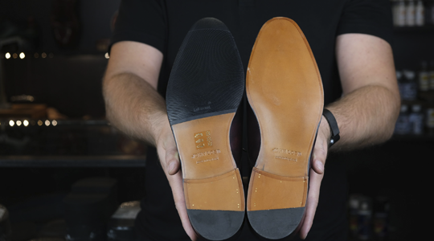
Профилактика обуви
Профилактика — это тонкая резиновая накладка, вырезанная в точном соответствии с очертаниями подошвы. Она приклеивается к...
17.04.2021
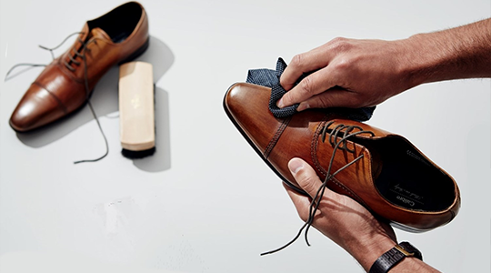
Чистка обуви
Как часто нужно чистить обувь, чтобы она носилась как можно дольше? Если говорить о домашнем уходе, то...
10.04.2021
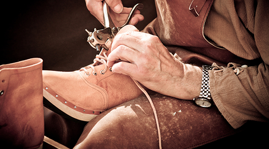
Как правильно выбрать мастера по реставрации вещей премиум сегмента?
Каждый день к нам обращаются клиенты, которые откровенно испортили свои вещи, отдав их на реставрацию где-то ранее.
07.04.2021
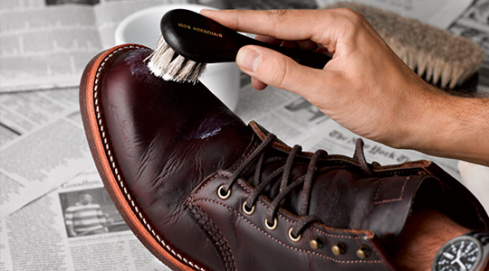
5 полезных советов по уходу за обувью и сумками от Rinnovo
1. Храните обувь чистой и хорошо просушенной. Всегда вкладывайте в обувь колодки.
20.02.2021
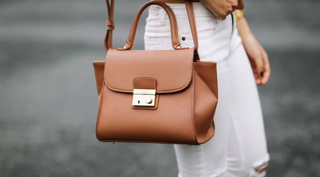
Философия Wellness – осознаность в каждом решении
В США богатые люди — это не те люди, которые сорят деньгами направо и налево, выкладывая в сеть огромное количество...
20.02.2021
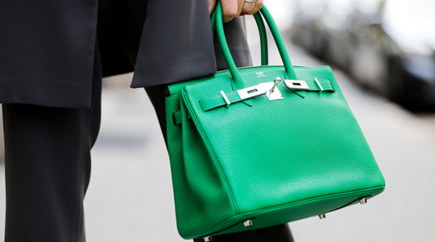
Hermes Birkin —культовые сумки всех времён
Мы начинаем серию постов о культовых сумках и обуви. Расскажем об истории создания моделей и интересных фактах.
20.02.2021
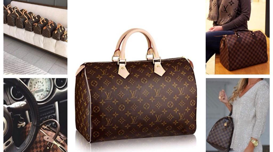
Louis Vuitton Speedy — культовые сумки всех времён
Сумка Louis Vuitton Speedy 25 — дна из первых сумок бренда и любимица элегантной актрисы, Одри Хепберн.
20.02.2021
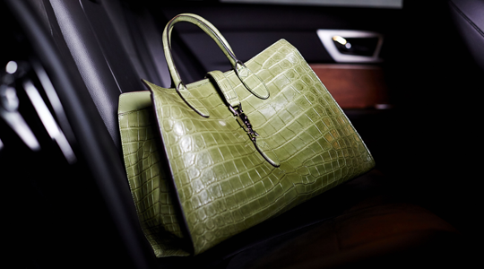
Проверенные приёмы ухода за брендовыми сумками
Ранее мы писали о том, что мы - приверженцы бережливого способа жизни и разумного потребления.
20.02.2021
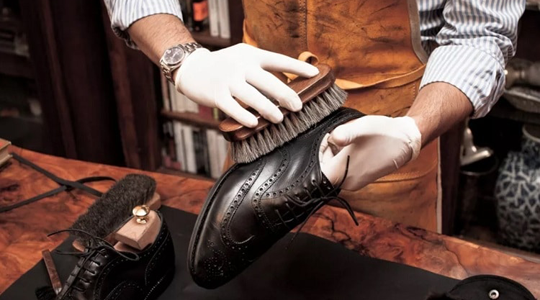
Почему лучше реставрировать обувь?
Мы всегда помним о том, чтобы отнести одежду в химчистку, но упорно пытаемся следить за обувью самостоятельно?
20.02.2021
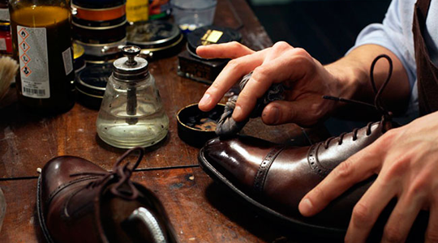
Что такое глассаж обуви и что он даёт?
Предлагаем Вам одну из наших премиальных услуг — процедуру глассажа. Глассаж обуви — это полировка обуви...
1
2
3
…
9